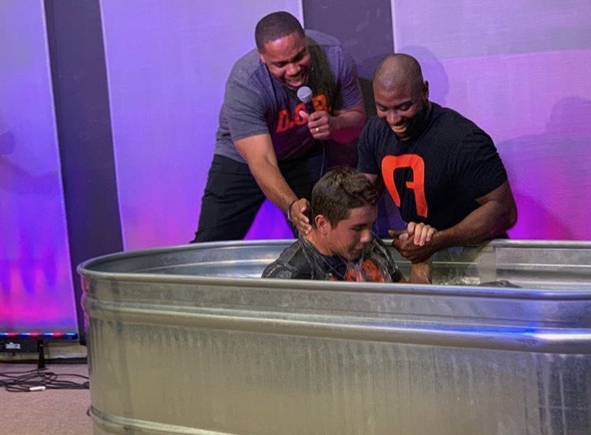

My Testimony
How I gave my life to Christ
Motivated by Success, Grappled by the Truth
My parents gave me a great foundation growing up. My mother read
me stories from the Bible and we went to church every Sunday.
Christianity was always a part of my life, sometimes a big part
and other times not. But it was always just a part.
When I got to college in 2017, I was determined to be successful in everything.
I had an academic scholarship and planned on earning A's & B's. I had
finally earned a spot on the football team and wanted to make a name for myself.
I also had a long distance girlfriend, and I wanted to be a kind, serving boyfriend.
By the end of the first year of college, I had failed in all 3 of those.
I had seen godly men groriwng up, and even a teammate who was
walking with Christ, and I was not moving in that direction.
Something had to change.
Summer 2018, after my freshman year, I read the Gospels (Matthew, Mark,
Luke, John) over and over. I worked out with the team in the morning,
came back to my house, and read the Bible or played 2K.
I was amazed by who Jesus is, and I was terrified of the
true cost of following Christ. Jesus didn't just call on people
to beleieve in him, but to follow him as well.
October 21, 2018, after months of trying to be "good enough"
to be a follower of Christ, I finally understood the gospel and
gave my life to Christ. I did not need to clean myself up to be accepted by God.
In fact, it's actually impossible to do so without God. I knew the Bible was
true, and I finally chose to follow the truth.

Life Now With Christ
Shortly after coming to Christ, I began a discipleship relationship with Dave
Edwards, who was on staff for StuMo at Arizona. I am so grateful for
the time, sacrifice, encouragement, and truth Dave gave me. Between Dave and Sammy,
I was surrounded all the time by faithful men who wanted to help me pursue Christ.
It took over a year to start truly finding freedom from sin I had clung so closely to.
There were times where I would rebel against God for a week or two at a time, where my heart
wanted to hide from God instead of return to my loving Father. But every time, I would
(eventually) text my guy Ethan, or Dave or Sammy, and just ask them to pray for my heart to desire
God. And can you beleive it, every time God would welcome me back and give me a
fire to seek God and love Him.
I never want to sugarcoat the Christian life. Jesus himself would tell people trying to follow him
they really should consider all this life entails (Luke 9:57-62). However, Christ does say He comes to
give life and life abundant (John 10:10). There is no greater joy, no greater peace, and no greater
purpose than a life with Christ.